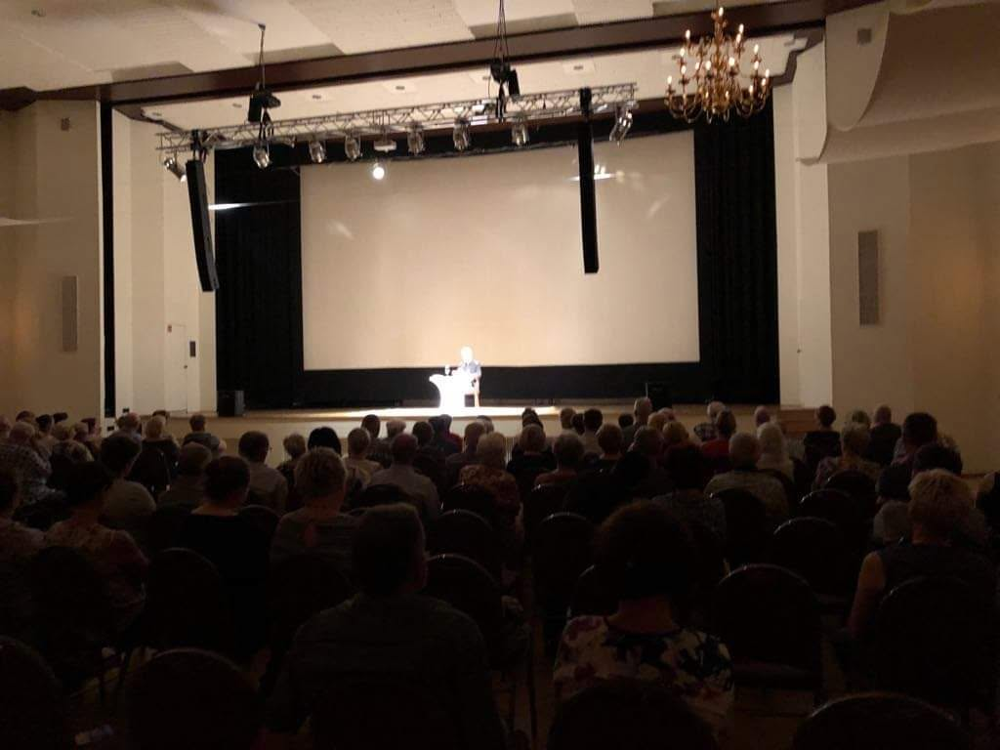
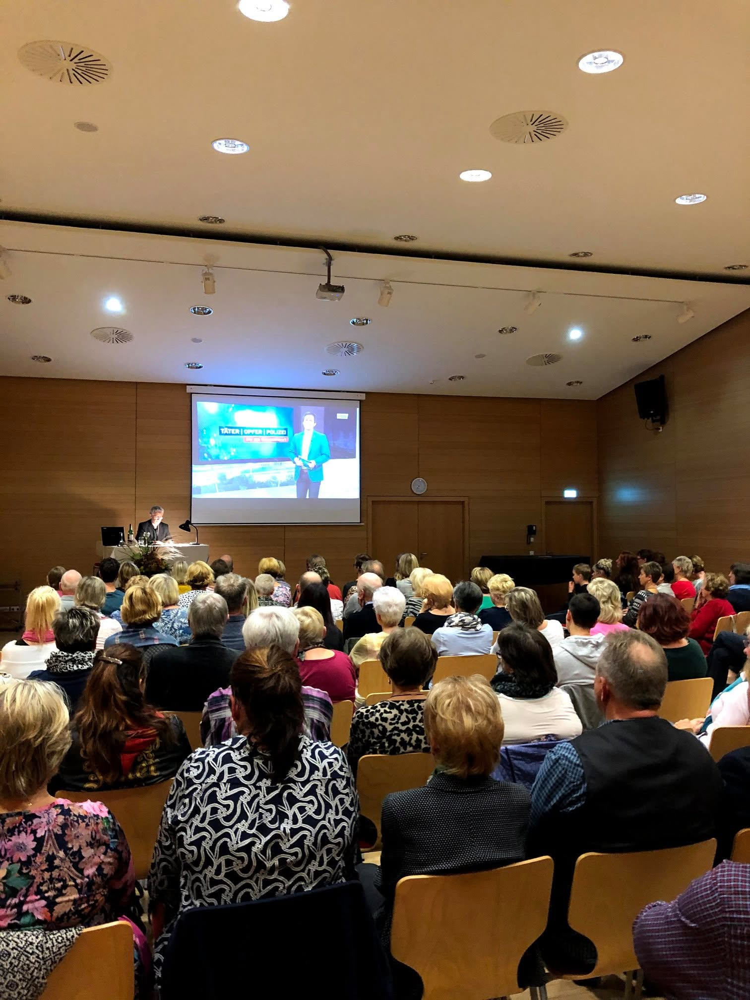
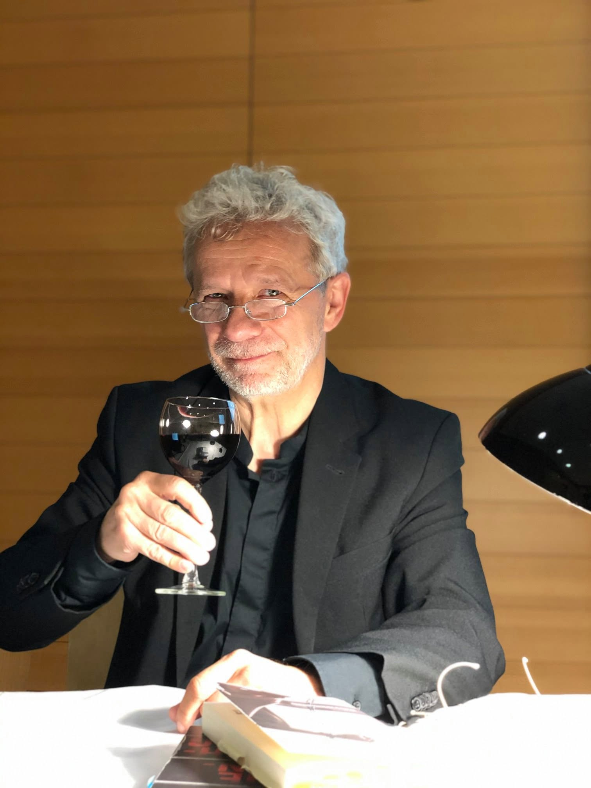
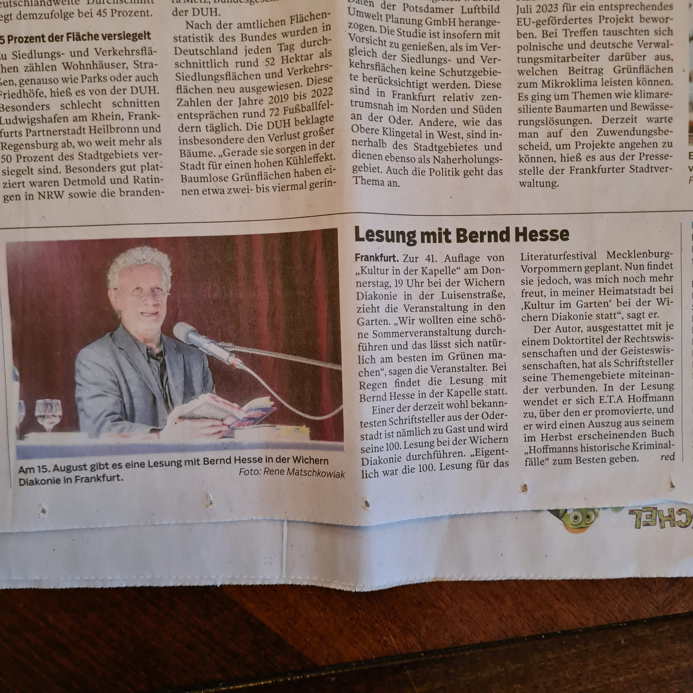
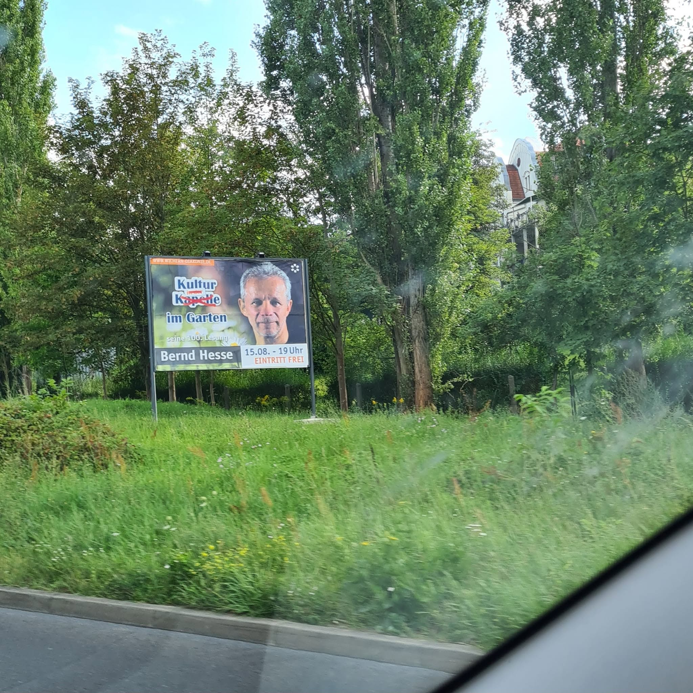
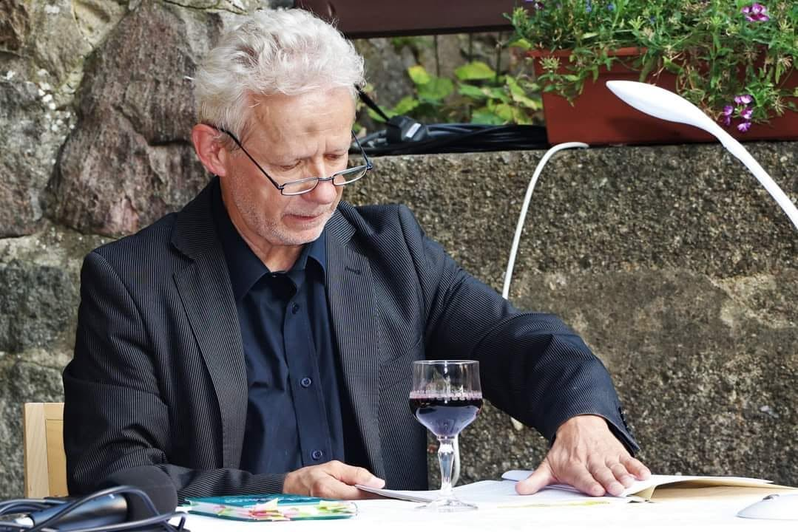
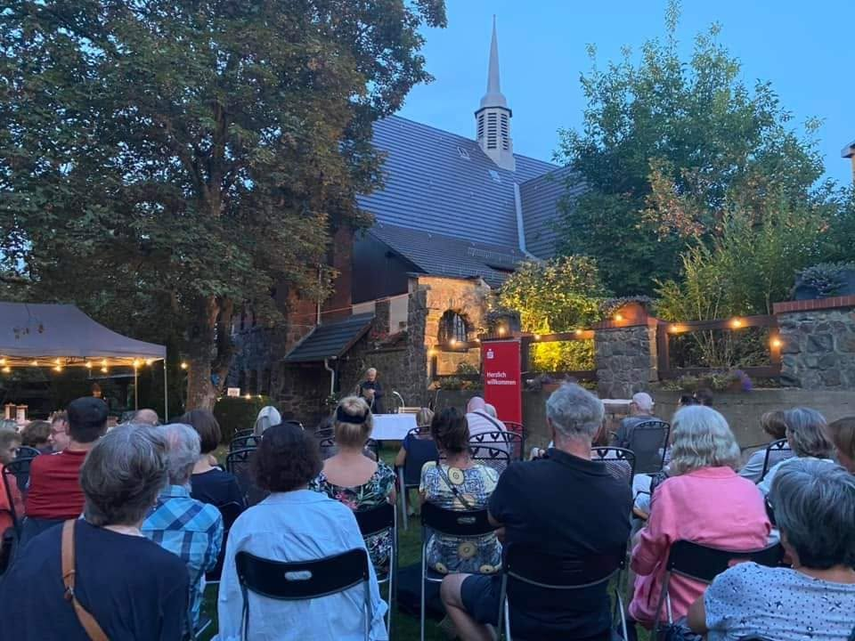
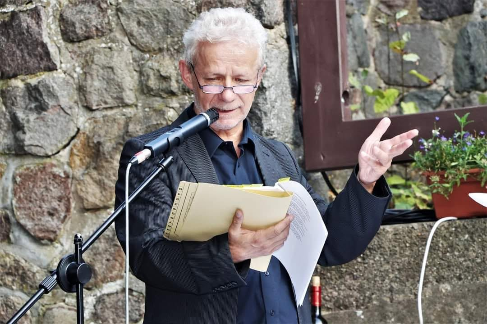
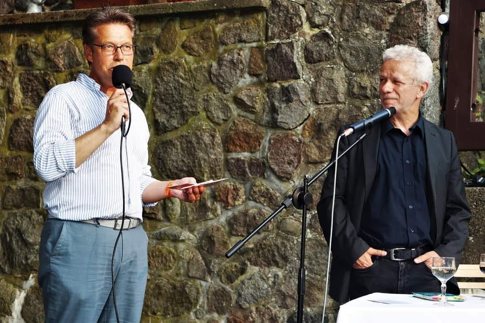

Lesungen & Veranstaltungen
Lesungen gehören seit vielen Jahren zur schriftstellerischen Arbeit Bernd Hesses. Dabei reicht das Spektrum von literarischen Abenden und Buchpremieren über Bibliotheks- und Museumsveranstaltungen bis zu Lesungen auf großen Bühnen und in Festsälen.
Im Mittelpunkt stehen Romane, Erzählungen und Novellen ebenso wie authentische Kriminalfälle und literarische Texte. Viele Veranstaltungen verbinden die Lesung mit Gesprächen über die Entstehung der Bücher, ihre Hintergründe und die tatsächlichen Geschehnisse, aus denen Literatur hervorgegangen ist.

Auf großen und kleinen Bühnen
Die Begegnung mit dem Publikum ist ein wesentlicher Teil einer Lesung. Veranstaltungsorte und Atmosphäre können dabei kaum unterschiedlicher sein: vom großen Festsaal bis zur kleinen, beinahe privaten Runde. Gerade diese Verschiedenheit macht den besonderen Reiz öffentlicher Lesungen aus.


Die einhundertste Lesung
Ein besonderer Einschnitt war die einhundertste Lesung. Was mit einzelnen Buchvorstellungen begonnen hatte, war inzwischen zu einer langen Reihe von Veranstaltungen an unterschiedlichen Orten geworden. Die einhundertste Lesung wurde deshalb nicht nur angekündigt, sondern auch mit einer eigenen Ausstellung begleitet.


Die Veranstaltung selbst wurde damit zugleich zu einem kleinen Rückblick auf die vorausgegangenen Jahre des Schreibens, Veröffentlichens und Vorlesens.




Geblieben ist bei allen unterschiedlichen Veranstaltungsformen vor allem eines: Literatur entfaltet beim Vorlesen noch einmal eine eigene Wirkung. Aus dem geschriebenen Text wird ein gemeinsamer Abend mit dem Publikum – und gelegentlich gehört auch ein Glas Wein dazu.